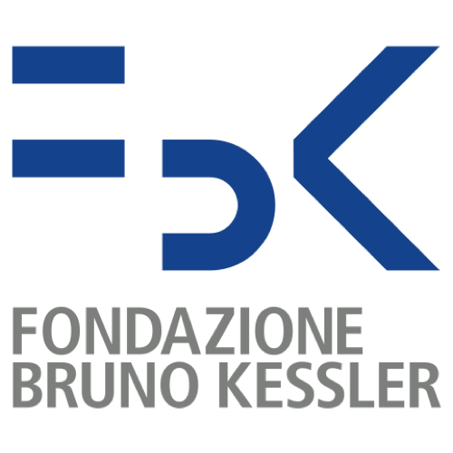
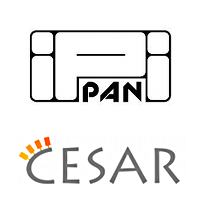
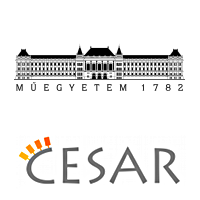
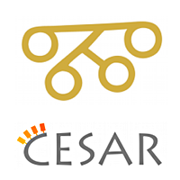
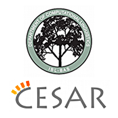
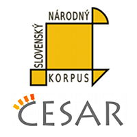
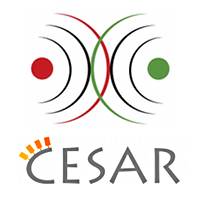
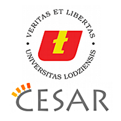

About the project
META-NET is designing and implementing META-SHARE, a sustainable network of repositories of language data, tools and related web services documented with high-quality metadata, aggregated in central inventories allowing for uniform search and access to resources. Data and tools can be both open and with restricted access rights, free and for-a-fee. META-SHARE targets existing but also new and emerging language data, tools and systems required for building and evaluating new technologies, products and services.
About the partners
META-SHARE will start by integrating nodes and centres represented by the partners of the META-NET consortium. It will gradually be extended to encompass additional nodes/centres and provide more functionality with the goal of turning into an as largely distributed infrastructure as possible.
Select network node
Please select one of the following META-SHARE network nodes to proceed. For an explanation of the differences between META-SHARE Managing Nodes and other META-SHARE nodes, you can visit this page.
META-SHARE Managing Nodes
CNR — National Research Council of Italy
DFKI — Deutsches Forschungszentrum für künstliche Intelligenz
ELDA — Evaluations and Language resources Distribution Agency- 
FBK — Fondazione Bruno Kessler
ILSP — Institute for Language and Speech Processing- 
IPIPAN — Institute of Computer Science, Polish Academy of Sciences 
Tilde
Other META-SHARE Nodes
- 
Budapesti Műszaki és Gazdaságtudományi Egyetem - 
Filozofski fakultet Sveučilišta u Zagrebu - 
Institute for Bulgarian Language, Bulgarian Academy of Sciences - 
Ľ. Štúr Institute of Linguistics, Slovak Academy of Sciences 
Lithuanian Language Institute
National Library of Norway- 
Research Institute for Linguistics, Hungarian Academy of Sciences
Romanian Academy Center for Artificial Intelligence
Synthema
University of Belgrade
University of Copenhagen
University of Gothenburg
University of Helsinki
University of Lisbon- 
University of Lodz
University of Tartu
University of the Basque Country
University of Vigo
Universitat Politècnica de Catalunya
Universitat Pompeu Fabra